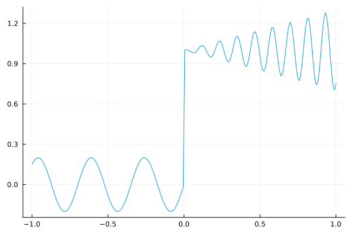
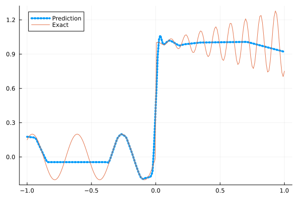
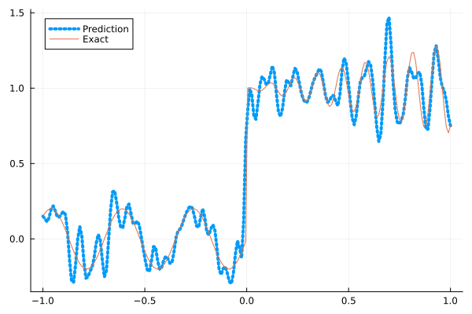
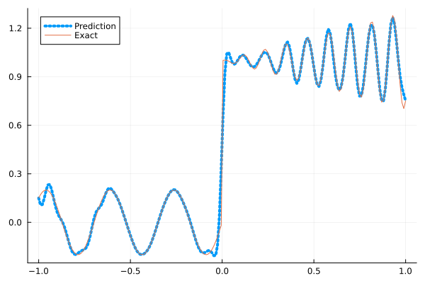
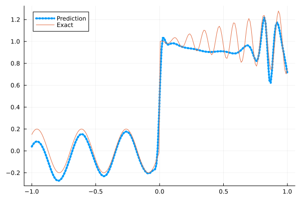
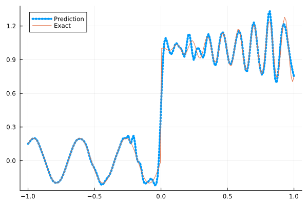
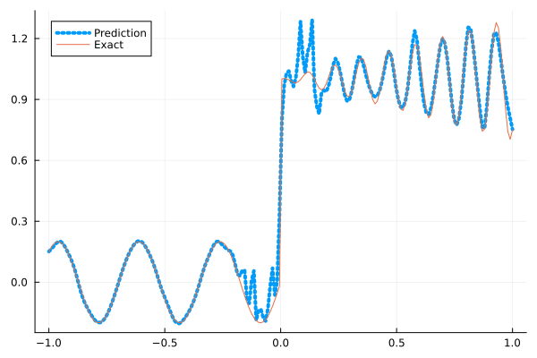

Fitting a nonlinear discontinuous function
This example is taken from here. However, we do not use adaptive activation functions. Instead, we show that using suitable non-parametric activation functions immediately performs better.
Consider the following discontinuous function with discontinuity at $x=0$:
\[u(x)= \begin{cases}0.2 \sin (18 x) & \text { if } x \leq 0 \\ 1+0.3 x \cos (54 x) & \text { otherwise }\end{cases}\]
The domain is $[-1,1]$. The number of training points used is 50.
Import pacakges
using Lux, Sophon
using NNlib, Optimisers, Plots, Random, StatsBase, ZygoteDataset
function u(x)
if x <= 0
return 0.2 * sin(18 * x)
else
return 1 + 0.3 * x * cos(54 * x)
end
end
function generate_data(n=50)
x = reshape(collect(range(-1.0f0, 1.0f0, n)), (1, n))
y = u.(x)
return (x, y)
endgenerate_data (generic function with 2 methods)Let's visualize the data.
x_train, y_train = generate_data(50)
x_test, y_test = generate_data(200)
Plots.plot(vec(x_test), vec(y_test),label=false)
Naive Neural Nets
First we demonstrate show naive fully connected neural nets could be really bad at fitting this function.
model = FullyConnected((1,50,50,50,50,1), relu)Chain(
layer_1 = Dense(1 => 50, relu), # 100 parameters
layer_2 = Dense(50 => 50, relu), # 2_550 parameters
layer_3 = Dense(50 => 50, relu), # 2_550 parameters
layer_4 = Dense(50 => 50, relu), # 2_550 parameters
layer_5 = Dense(50 => 1), # 51 parameters
) # Total: 7_801 parameters,
# plus 0 states, summarysize 80 bytes.Train the model
function train(model, x, y)
ps, st = Lux.setup(Random.default_rng(), model)
opt = Adam()
st_opt = Optimisers.setup(opt,ps)
function loss(model, ps, st, x, y)
y_pred, _ = model(x, ps, st)
mes = mean(abs2, y_pred .- y)
return mes
end
for i in 1:2000
gs = gradient(p->loss(model,p,st,x,y), ps)[1]
st_opt, ps = Optimisers.update(st_opt, ps, gs)
if i % 100 == 1 || i == 2000
println("Epoch $i || ", loss(model,ps,st,x,y))
end
end
return ps, st
endtrain (generic function with 1 method)Plot the result
@time ps, st = train(model, x_train, y_train)
y_pred = model(x_test,ps,st)[1]
Plots.plot(vec(x_test), vec(y_pred),label="Prediction",line = (:dot, 4))
Plots.plot!(vec(x_test), vec(y_test),label="Exact",legend=:topleft)Epoch 1 || 3.33017869956396
Epoch 101 || 0.019885324398325605
Epoch 201 || 0.015979258081734945
Epoch 301 || 0.015717074732489546
Epoch 401 || 0.015499377483576748
Epoch 501 || 0.015157771621808177
Epoch 601 || 0.014653712359935742
Epoch 701 || 0.013955752641234427
Epoch 801 || 0.013433643924905108
Epoch 901 || 0.013043891388220213
Epoch 1001 || 0.012782155740489177
Epoch 1101 || 0.012591206709225573
Epoch 1201 || 0.012409315083539773
Epoch 1301 || 0.01227159398196088
Epoch 1401 || 0.012191540873622215
Epoch 1501 || 0.012136297176754251
Epoch 1601 || 0.012117214547750697
Epoch 1701 || 0.012105404983873837
Epoch 1801 || 0.012104043969832078
Epoch 1901 || 0.01209447328349506
Epoch 2000 || 0.012109254726489698
9.929121 seconds (13.15 M allocations: 1.483 GiB, 6.22% gc time, 91.06% compilation time)
Siren
We use four hidden layers with 50 neurons in each.
model = Siren(1,50,50,50,50,1; omega = 30f0)Chain(
layer_1 = Dense(1 => 50, sin), # 100 parameters
layer_2 = Dense(50 => 50, sin), # 2_550 parameters
layer_3 = Dense(50 => 50, sin), # 2_550 parameters
layer_4 = Dense(50 => 50, sin), # 2_550 parameters
layer_5 = Dense(50 => 1), # 51 parameters
) # Total: 7_801 parameters,
# plus 0 states, summarysize 88 bytes.@time ps, st = train(model, x_train, y_train)
y_pred = model(x_test,ps,st)[1]
Plots.plot(vec(x_test), vec(y_pred),label="Prediction",line = (:dot, 4))
Plots.plot!(vec(x_test), vec(y_test),label="Exact",legend=:topleft)Epoch 1 || 0.9705300623362147
Epoch 101 || 0.0007561923082641708
Epoch 201 || 1.1297227238278902e-5
Epoch 301 || 5.1512842227333924e-8
Epoch 401 || 3.1974522017814313e-10
Epoch 501 || 5.636160754076916e-12
Epoch 601 || 3.3236789157500837e-13
Epoch 701 || 6.051430674298571e-14
Epoch 801 || 7.352492298615409e-14
Epoch 901 || 9.396729922333073e-14
Epoch 1001 || 5.774618944901364e-14
Epoch 1101 || 4.589234828022454e-14
Epoch 1201 || 7.806098247045806e-14
Epoch 1301 || 5.2185881313365856e-14
Epoch 1401 || 9.222372342063327e-14
Epoch 1501 || 6.361687381881813e-14
Epoch 1601 || 1.1213698751995143e-13
Epoch 1701 || 7.205994806691258e-14
Epoch 1801 || 8.441128149214739e-14
Epoch 1901 || 1.1276216425748244e-13
Epoch 2000 || 1.1026859347164054e-13
5.138629 seconds (8.15 M allocations: 1.298 GiB, 7.42% gc time, 83.15% compilation time)
As we can see the model overfits the data, and the high frequencies cannot be optimized away. We need to tunning the hyperparameter omega
model = Siren(1,50,50,50,50,1; omega = 10f0)Chain(
layer_1 = Dense(1 => 50, sin), # 100 parameters
layer_2 = Dense(50 => 50, sin), # 2_550 parameters
layer_3 = Dense(50 => 50, sin), # 2_550 parameters
layer_4 = Dense(50 => 50, sin), # 2_550 parameters
layer_5 = Dense(50 => 1), # 51 parameters
) # Total: 7_801 parameters,
# plus 0 states, summarysize 88 bytes.@time ps, st = train(model, x_train, y_train)
y_pred = model(x_test,ps,st)[1]
Plots.plot(vec(x_test), vec(y_pred),label="Prediction",line = (:dot, 4))
Plots.plot!(vec(x_test), vec(y_test),label="Exact",legend=:topleft)Epoch 1 || 1.261528460456153
Epoch 101 || 0.007192711718045894
Epoch 201 || 0.0056378212526998015
Epoch 301 || 0.004536694222024526
Epoch 401 || 0.0035678103470207275
Epoch 501 || 0.0027660939992949036
Epoch 601 || 0.002065771498490893
Epoch 701 || 0.001507555404655918
Epoch 801 || 0.0010550927367942383
Epoch 901 || 0.0006520289180423822
Epoch 1001 || 0.000335090813963713
Epoch 1101 || 0.0001531911021343161
Epoch 1201 || 7.962479715139931e-5
Epoch 1301 || 5.3966778228776016e-5
Epoch 1401 || 4.312663489845188e-5
Epoch 1501 || 3.684786108151078e-5
Epoch 1601 || 3.2433743134036545e-5
Epoch 1701 || 2.9036353014830788e-5
Epoch 1801 || 2.6282383985759527e-5
Epoch 1901 || 2.3956224286025085e-5
Epoch 2000 || 2.1937403189570818e-5
0.768112 seconds (1.15 M allocations: 892.451 MiB, 9.06% gc time)
Self-scalable Tanh (Stan)
stan is also a good choice. It is particularly useful for unnormalized data.
model = FullyConnected((1,50,50,50,50,1), stan)Chain(
layer_1 = Dense(1 => 50, stan), # 100 parameters
layer_2 = Dense(50 => 50, stan), # 2_550 parameters
layer_3 = Dense(50 => 50, stan), # 2_550 parameters
layer_4 = Dense(50 => 50, stan), # 2_550 parameters
layer_5 = Dense(50 => 1), # 51 parameters
) # Total: 7_801 parameters,
# plus 0 states, summarysize 80 bytes.@time ps, st = train(model, x_train, y_train)
y_pred = model(x_test,ps,st)[1]
Plots.plot(vec(x_test), vec(y_pred),label="Prediction",line = (:dot, 4))
Plots.plot!(vec(x_test), vec(y_test),label="Exact",legend=:topleft)Epoch 1 || 0.7404530455162985
Epoch 101 || 0.04963482763636952
Epoch 201 || 0.04555251699484503
Epoch 301 || 0.03585072303150836
Epoch 401 || 0.02508152398373746
Epoch 501 || 0.018821303577811612
Epoch 601 || 0.016221718887478285
Epoch 701 || 0.01626135596420254
Epoch 801 || 0.013128789677125252
Epoch 901 || 0.01154231940225117
Epoch 1001 || 0.009947479550183769
Epoch 1101 || 0.008778310954706188
Epoch 1201 || 0.008061946016462762
Epoch 1301 || 0.0077289571320540585
Epoch 1401 || 0.009054385890294338
Epoch 1501 || 0.007234607008904726
Epoch 1601 || 0.02171036125917565
Epoch 1701 || 0.006956393873544773
Epoch 1801 || 0.006825540097315331
Epoch 1901 || 0.008070586744041255
Epoch 2000 || 0.006703247264335972
9.154644 seconds (10.20 M allocations: 1.912 GiB, 5.49% gc time, 89.05% compilation time)
Gaussian activation function
We can also try using a fully connected net with the gaussian activation function.
model = FullyConnected((1,50,50,50,50,1), gaussian)Chain(
layer_1 = Dense(1 => 50, gaussian), # 100 parameters
layer_2 = Dense(50 => 50, gaussian), # 2_550 parameters
layer_3 = Dense(50 => 50, gaussian), # 2_550 parameters
layer_4 = Dense(50 => 50, gaussian), # 2_550 parameters
layer_5 = Dense(50 => 1), # 51 parameters
) # Total: 7_801 parameters,
# plus 0 states, summarysize 80 bytes.@time ps, st = train(model, x_train, y_train)
y_pred = model(x_test,ps,st)[1]
Plots.plot(vec(x_test), vec(y_pred),label="Prediction",line = (:dot, 4))
Plots.plot!(vec(x_test), vec(y_test),label="Exact",legend=:topleft)Epoch 1 || 1.4006608369729754
Epoch 101 || 0.006944155319908711
Epoch 201 || 0.006409247409181044
Epoch 301 || 0.005998021945136271
Epoch 401 || 0.005662350941365397
Epoch 501 || 0.0048104313460413505
Epoch 601 || 0.004388630993477195
Epoch 701 || 0.0032222641194809957
Epoch 801 || 0.0020338548802049544
Epoch 901 || 0.0014810845666567848
Epoch 1001 || 0.0007961346869473207
Epoch 1101 || 0.00017093758506046063
Epoch 1201 || 2.169670485502752e-5
Epoch 1301 || 1.1942347235101536e-5
Epoch 1401 || 2.6298195668618885e-6
Epoch 1501 || 2.8459193514363953e-6
Epoch 1601 || 1.7672269546088587e-8
Epoch 1701 || 2.8667931265029407e-6
Epoch 1801 || 1.454904118431271e-8
Epoch 1901 || 7.35876493337366e-7
Epoch 2000 || 3.704903627782625e-8
4.840045 seconds (7.26 M allocations: 1.250 GiB, 6.73% gc time, 80.56% compilation time)
Quadratic activation function
quadratic is much cheaper to compute compared to the Gaussain activation function.
model = FullyConnected((1,50,50,50,50,1), quadratic)Chain(
layer_1 = Dense(1 => 50, quadratic), # 100 parameters
layer_2 = Dense(50 => 50, quadratic), # 2_550 parameters
layer_3 = Dense(50 => 50, quadratic), # 2_550 parameters
layer_4 = Dense(50 => 50, quadratic), # 2_550 parameters
layer_5 = Dense(50 => 1), # 51 parameters
) # Total: 7_801 parameters,
# plus 0 states, summarysize 80 bytes.@time ps, st = train(model, x_train, y_train)
y_pred = model(x_test,ps,st)[1]
Plots.plot(vec(x_test), vec(y_pred),label="Prediction",line = (:dot, 4))
Plots.plot!(vec(x_test), vec(y_test),label="Exact",legend=:topleft)Epoch 1 || 0.2995339021089594
Epoch 101 || 0.0047840950201629585
Epoch 201 || 0.0033878379038038663
Epoch 301 || 0.0021579558130848564
Epoch 401 || 0.0007638172833180898
Epoch 501 || 1.9056091633213416e-5
Epoch 601 || 3.163637850427957e-7
Epoch 701 || 9.505421077917191e-7
Epoch 801 || 9.691226481601459e-10
Epoch 901 || 2.8151562864430505e-6
Epoch 1001 || 2.4103028194130376e-8
Epoch 1101 || 1.5236526236213268e-11
Epoch 1201 || 3.501185725966983e-5
Epoch 1301 || 6.869873570566497e-10
Epoch 1401 || 3.123611145885504e-13
Epoch 1501 || 5.832611841373634e-13
Epoch 1601 || 0.00015803853954794917
Epoch 1701 || 6.809800565542997e-9
Epoch 1801 || 8.08910534294885e-5
Epoch 1901 || 7.291228874482161e-10
Epoch 2000 || 1.4831619294992077e-7
4.351928 seconds (7.03 M allocations: 1.235 GiB, 7.41% gc time, 85.04% compilation time)
Conclusion
"Neural networks suppresse high frequency components" is a misinterpretation of the spectral bias. The accurate way of putting it is that the lower frequencies in the error are optimized first in the optimization process. This can be seen in Siren's example of overfitting data, where you do not have implicit regularization. The high frequency in the network will never go away because it has fitted the data perfectly.
Mainstream attributes the phenomenon that neural networks "suppress" high frequencies to gradient descent. This is not the whole picture. Initialization also plays an important role. Siren mitigats this problem by initializing larger weights in the first layer, while activation functions such as gassian have large enough gradients and sufficiently large support of the second derivative with proper hyperparameters. Please refer to Vincent Sitzmann, Julien Martel, Alexander Bergman, David Lindell, Gordon Wetzstein (2020), Sameera Ramasinghe, Simon Lucey (2021) and Sameera Ramasinghe, Lachlan MacDonald, Simon Lucey (2022) if you want to dive deeper into this.